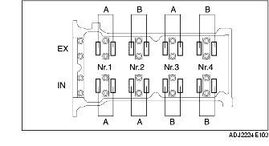

KONTROLL AV VENTILSPEL [ZJ, Z6]
B3E011012111W01
1. Demontera batterikåpan.
2. Lossa batteriets minuskabel.
3. Demontera undre kåpan och innerskärmen (höger).
4. Demontera luftrenaren. (Europeiska specifikationer (vänsterstyrning)) (Se DEMONTERING/INSTALLATION AV INSUGSLUFTSYSTEM [ZJ, Z6].)
5. Ta bort kåpan över luftrenaren och placera luftrenarhuset ut vägen med PCM-kontakten fortfarande inkopplad. (GB specifikationer) (Se DEMONTERING/INSTALLATION AV INSUGSLUFTSYSTEM [ZJ, Z6].)
6. Demontera tändspolarna. (Se DEMONTERING/MONTERING AV TÄNDSPOLE [ZJ, Z6].)
7. Koppla ur ventilationsslangen.
8. Ta av ventilkåpan.
9. Mät ventilspelen.
-
(1) Dra runt vevaxeln medsols så att cylinder 1 befinner sig i kompressionsslagets övre dödpunkt.
-
(2) Mät ventilspelet vid A enligt figuren.

-
• Om ventilspelet inte ligger inom specifikationen, byt ut ventillyftaren och justera ventilspelet till medianvärdet. (Se JUSTERING AV VENTILSPEL [ZJ, Z6].)
-
Standard ventilspel [Kall motor]
-
0,27-0,33 mm {0,0107-0,0129 in}
-
Observera
-
• Notera de uppmätta värdena för att kunna bestämma lämpliga ersättningsventillyftare.
-
(3) Dra runt vevaxeln medsols 360° så att cylinder 4 befinner sig i kompressionsslagets övre dödpunkt.
-
(4) Mät ventilspelet vid B enligt figuren.
-
• Om ventilspelet inte ligger inom specifikationen, byt ut ventillyftaren och justera ventilspelet till medianvärdet. (Se JUSTERING AV VENTILSPEL [ZJ, Z6].)
-
Standard ventilspel [Kall motor]
-
0,27-0,33 mm {0,0107-0,0129 in}
-
Observera
-
• Notera de uppmätta värdena för att kunna bestämma lämpliga ersättningsventillyftare.
10. Montera ventilkåpan. (Se Observera vid montering av ventilkåpan.)
11. Anslut ventilationsslangen.
12. Montera tändspolarna. (Se DEMONTERING/MONTERING AV TÄNDSPOLE [ZJ, Z6].)
13. Montera luftrenarkomponenten. (Se DEMONTERING/INSTALLATION AV INSUGSLUFTSYSTEM [ZJ, Z6].)
14. Montera stänkskyddet och underkåpan (höger sida).